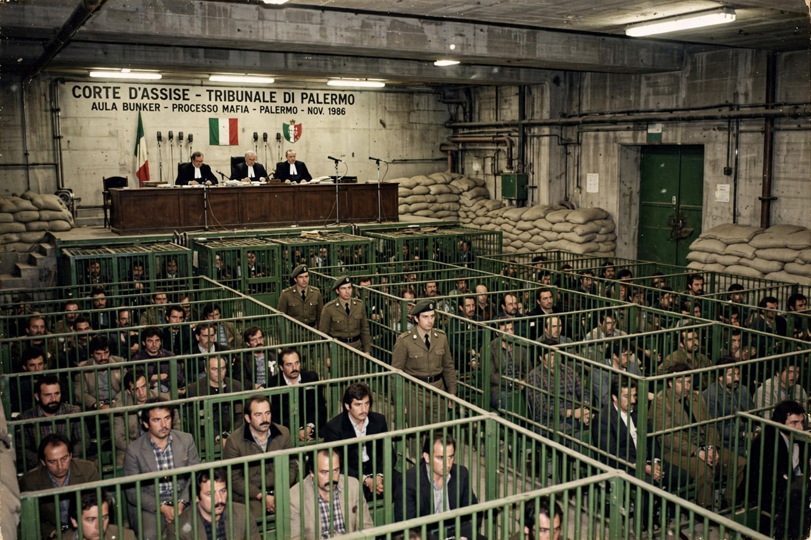

| Maxi Trial | |
|---|---|
 | |
| Location | Bunker courtroom, Ucciardone prison, Palermo, Sicily, Italy |
| Dates | 10 February 1986 – 16 December 1987 (verdict) |
| Defendants | 475 (338 remained at verdict) |
| Outcome | 360 convictions; sentences totalling about 2,665 years, confirmed on appeal in 1992 |
| Key judges | Giovanni Falcone, Paolo Borsellino (investigating) |
The Maxi Trial (Italian: Maxiprocesso di Palermo) was a criminal trial against the Sicilian Mafia that took place in Palermo, Sicily, between 1986 and 1987. It remains the largest Mafia trial in history and a landmark in the fight against organised crime, because it for the first time treated Cosa Nostra as a single, unified criminal organisation and convicted its leadership on the testimony of former members turned state's evidence (pentiti).
In the early 1980s Sicily was convulsed by the Second Mafia War, in which the Corleonesi faction under Salvatore Riina and Bernardo Provenzano murdered hundreds of rivals. In response, a pool of anti-Mafia magistrates in Palermo — including Giovanni Falcone, Paolo Borsellino and Antonino Caponnetto — pooled their investigations. The breakthrough came in 1984 when the captured Mafia boss Tommaso Buscetta agreed to cooperate, revealing the structure of Cosa Nostra: its hierarchy of families, the provincial Commission ("Cupola") that governed it, and the rules binding its members. Buscetta's testimony, combined with banking and police evidence, allowed the pool to prepare a charge sheet running to thousands of pages against hundreds of defendants.
To hold the proceedings, a purpose-built, high-security "bunker" courtroom was constructed adjoining Palermo's Ucciardone prison, with steel cages for the defendants and facilities designed to withstand attack. The trial opened on 10 February 1986 with 475 defendants; numbers fell as some died, were severed to other proceedings or were released. Charges included Mafia association (the new offence created by the Rognoni–La Torre law of 1982), some 120 murders, drug trafficking, extortion and other crimes.
Buscetta was the star prosecution witness, facing down his former associates in court, and his evidence was corroborated by other pentiti such as Salvatore Contorno. Verdicts were delivered on 16 December 1987: of 338 defendants remaining, 360 of the original accused groupings were found guilty (counting severed defendants), with 19 life sentences imposed on leading bosses including Riina (tried in absentia) and combined prison terms totalling around 2,665 years; 114 were acquitted.
Many convictions were initially overturned on appeal, causing public dismay, but on 30 January 1992 the Supreme Court of Cassation upheld the Maxi Trial's core verdicts and, crucially, the "Buscetta theorem" — the principle that Cosa Nostra was a single hierarchical organisation whose Commission members were responsible for murders committed to further its aims. The ruling was final in most respects.
The Mafia retaliated: in 1992 Falcone and Borsellino were both assassinated in bombings (Capaci and Via D'Amelio), murders that shocked Italy and triggered a massive state crackdown, including the arrest of Riina in January 1993.